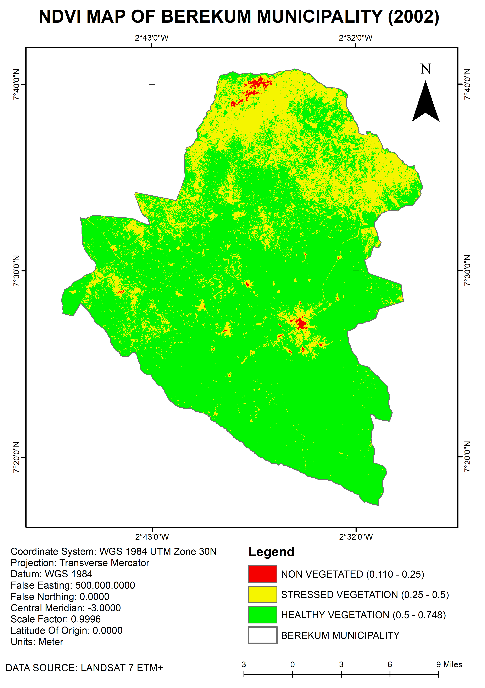
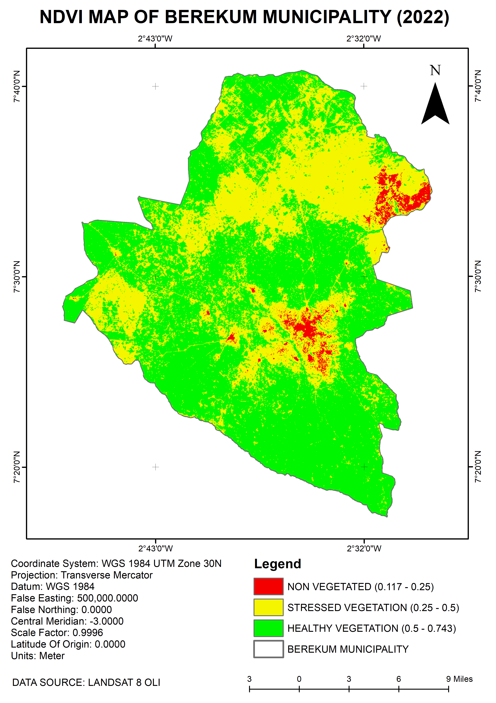
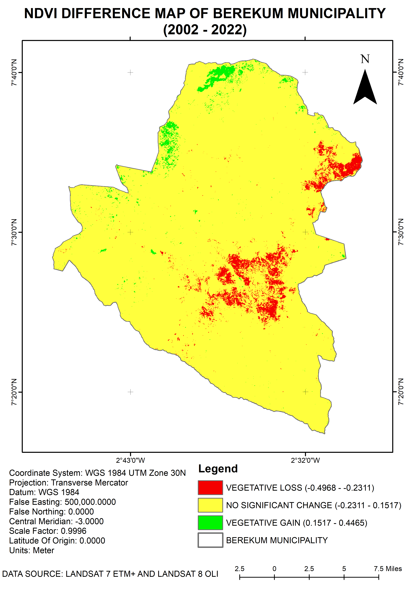
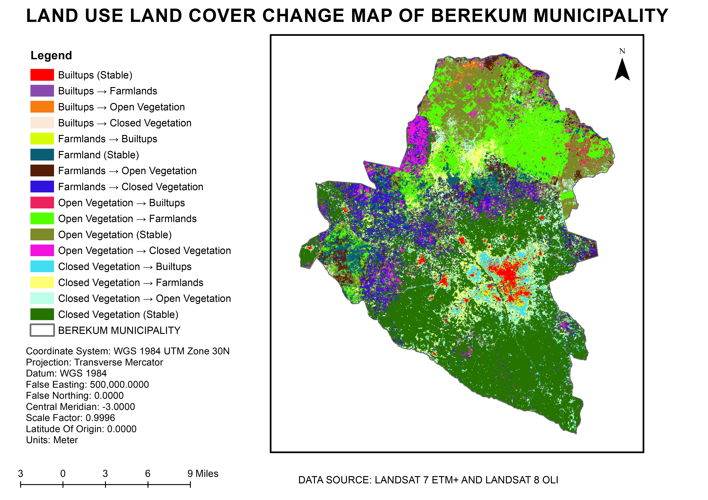

Back to Portfolio
Land Cover Change in
Remote Sensing · Land Cover Analysis · Policy
Land Cover Change in
Berekum Municipality
 LULC Classification Map — 2002 & 2022
LULC Classification Map — 2002 & 2022
LULC Classification Map — 2002 & 2022
LULC Classification Map — 2002 & 2022
This study tracks land cover transformation in Berekum Municipality, Bono Region, Ghana, over a twenty-year period from 2002 to 2022. Using a dual-sensor Landsat approach, the analysis maps the conversion of forest and open vegetation to farmland and built-up areas, quantifies the pace of urban expansion, and identifies zones of both vegetation loss and forest recovery.
The analysis goes beyond simple before-and-after mapping. It accounts for inter-sensor spectral differences between Landsat 7 ETM+ and Landsat 8 OLI, applies statistically grounded change thresholds, and produces a full 16-category land cover transition matrix — identifying not just what changed, but precisely what it changed.
The analysis followed a reproducible remote sensing workflow designed to minimise sources of error when comparing imagery from two different Landsat sensors across a 20-year gap.
Landsat 7 ETM+ and Landsat 8 OLI share 30 m resolution but differ critically in NIR band placement. The ETM+ Band 4 (0.76–0.90 µm) overlaps an atmospheric water vapour feature near 0.82 µm, introducing systematic NDVI offset relative to the OLI Band 5 (0.85–0.88 µm). This inter-sensor bias, documented by Roy et al. (2016), was explicitly accounted for in the change analysis.
Both scenes were reprojected to WGS 1984 UTM Zone 30N. Raw DN values were converted to surface reflectance using USGS Collection 2 coefficients: ρ = 0.0000275 × DN − 0.2.
NDVI = (NIR − Red) / (NIR + Red) was computed for both epochs. Three vegetation zones were delineated: Healthy (>0.50), Sparse/Stressed (0.25–0.50), and Non-Vegetated (<0.25).
The NDVI difference image (ΔNDVI = NDVI2022 − NDVI2002) used a statistically grounded threshold of μ ± 2σ (Hu et al., 2004), yielding change boundaries at −0.2311 and +0.1517, anchored to the empirical distribution rather than an arbitrary value.
Maximum Likelihood Classification produced four-class land cover maps for both epochs. A pixel-by-pixel post-classification overlay generated a 16-category transition matrix quantifying every class-to-class conversion, including the taungya-driven Farmlands → Closed Vegetation pathway.
Comparing the two NDVI zone maps makes the transformation immediately visible. In 2002 the municipality was overwhelmingly green — dominated by Healthy Vegetation. By 2022, yellow (Sparse/Stressed) and red (Non-Vegetated) patches have expanded significantly.


| NDVI Zone | NDVI Range | Area 2002 (km²) | Area 2022 (km²) | Net Change |
|---|---|---|---|---|
| Non-Vegetated | < 0.25 | 3.55 | 19.41 | +15.86 |
| Sparse / Stressed Vegetation | 0.25 – 0.50 | 190.77 | 313.88 | +123.11 |
| Healthy Vegetation | > 0.50 | 668.02 | 529.05 | −138.97 |
| Total | — | 862.34 | 862.34 | — |
The ΔNDVI map uses a diverging colour scale with statistically derived thresholds (μ ± 2σ). Red zones mark significant vegetation loss concentrated around Berekum town and along expanding farmland frontiers. Green zones in the north indicate forest recovery, consistent with the taungya reforestation programme operating within the forest reserve.

Supervised Maximum Likelihood Classification was applied independently to both images, producing four land cover classes. Side-by-side comparison reveals the dramatic northward and central spread of farmland (brown) and the fragmentation of open vegetation (yellow), while the built-up core (red) around Berekum town has more than tripled in footprint.
| Land Cover Class | Area 2002 (km²) | Area 2022 (km²) | Net Change (km²) | % Change |
|---|---|---|---|---|
| Builtups | 15.93 | 55.88 | +39.95 | +251% |
| Farmlands | 160.53 | 220.07 | +59.54 | +37% |
| Open Vegetation | 245.88 | 187.39 | −58.49 | −24% |
| Closed Vegetation | 439.00 | 399.00 | −40.00 | −9% |
| Total | 862.34 | 862.34 | — | — |
The post-classification change map uses 16 distinct colours to show every class-to-class transition. Of the total 862.34 km², some 470.92 km² (54.6%) remained stable. The two dominant transitions tell the story of the landscape: open vegetation converted to farmland, and farmed plots within the forest reserve maturing back to closed canopy under the taungya system.

| Land Cover Transition | Area (km²) | % of Total Area |
|---|---|---|
| Builtups (Stable) | 11.97 | 1.39% |
| Builtups → Farmlands | 1.22 | 0.14% |
| Builtups → Open Vegetation | 2.25 | 0.26% |
| Builtups → Closed Vegetation | 0.50 | 0.06% |
| Farmlands → Builtups | 12.14 | 1.41% |
| Farmlands (Stable) | 51.72 | 6.00% |
| Farmlands → Open Vegetation | 39.05 | 4.53% |
| Farmlands → Closed Vegetation | 57.62 | 6.68% |
| Open Vegetation → Builtups | 6.41 | 0.74% |
| Open Vegetation → Farmlands | 117.87 | 13.67% |
| Open Vegetation (Stable) | 93.97 | 10.90% |
| Open Vegetation → Closed Vegetation | 27.63 | 3.20% |
| Closed Vegetation → Builtups | 25.35 | 2.94% |
| Closed Vegetation → Farmlands | 49.26 | 5.71% |
| Closed Vegetation → Open Vegetation | 52.12 | 6.04% |
| Closed Vegetation (Stable) | 313.26 | 36.33% |
| Total | 862.34 | 100.00% |
Built-up area grew from 15.93 km² to 55.88 km² — a 251% increase over 20 years. Closed Vegetation → Builtups (25.35 km²) was the dominant urban conversion pathway, pointing to direct encroachment on forested land.
Open Vegetation → Farmlands (117.87 km²; 13.67%) was the single largest transition, driven by subsistence agriculture expanding to meet growing food demand without sufficient yield improvements on existing land.
Farmlands → Closed Vegetation (57.62 km²; 6.68%) reflects the rotational taungya system within forest reserves: farmers cultivate temporarily, plant tree seedlings, and vacate as canopy closes — producing a measurable reforestation signature in the satellite data.
Moderate NDVI values (0.2–0.4) at urban margins result from pioneer vegetation on cleared-but-unbuilt plots and compound housing where shade trees and rooftops share a 30 m pixel — a resolution limitation requiring Sentinel-2 or sub-metre imagery to resolve definitively.
A core output of this analysis was translating complex remote sensing findings into actionable guidance for a non-technical audience.
Satellite analysis reveals a landscape undergoing rapid and significant transformation over the past twenty years. Built-up areas have expanded by over 250 percent — from approximately 16 km² to nearly 56 km² — reflecting sustained population growth and urban expansion. Farmland has increased by approximately 60 km², largely at the expense of open woodland and shrubland, which declined by nearly 58 km².
Healthy, closed vegetation cover decreased from around 439 km² to 399 km² — a loss that represents a meaningful reduction in the municipality's intact forest estate. On a positive note, a meaningful area of farmland within the forest reserves has transitioned back to closed vegetation, indicating that the rotational taungya farming system is functioning as intended.